Staviame na chuti, čistom zložení a proteíne.
Objav produkty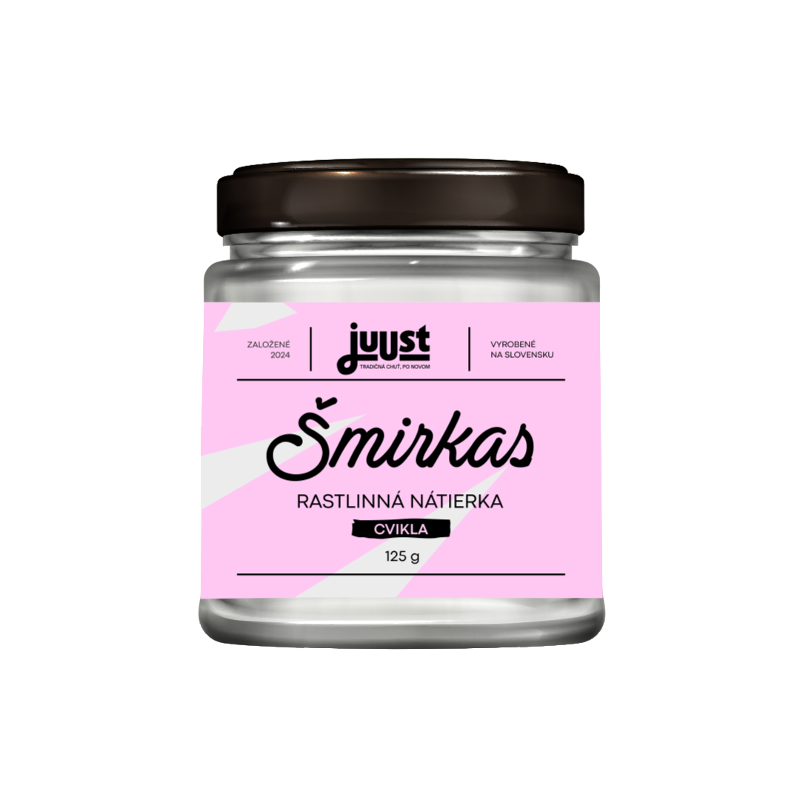
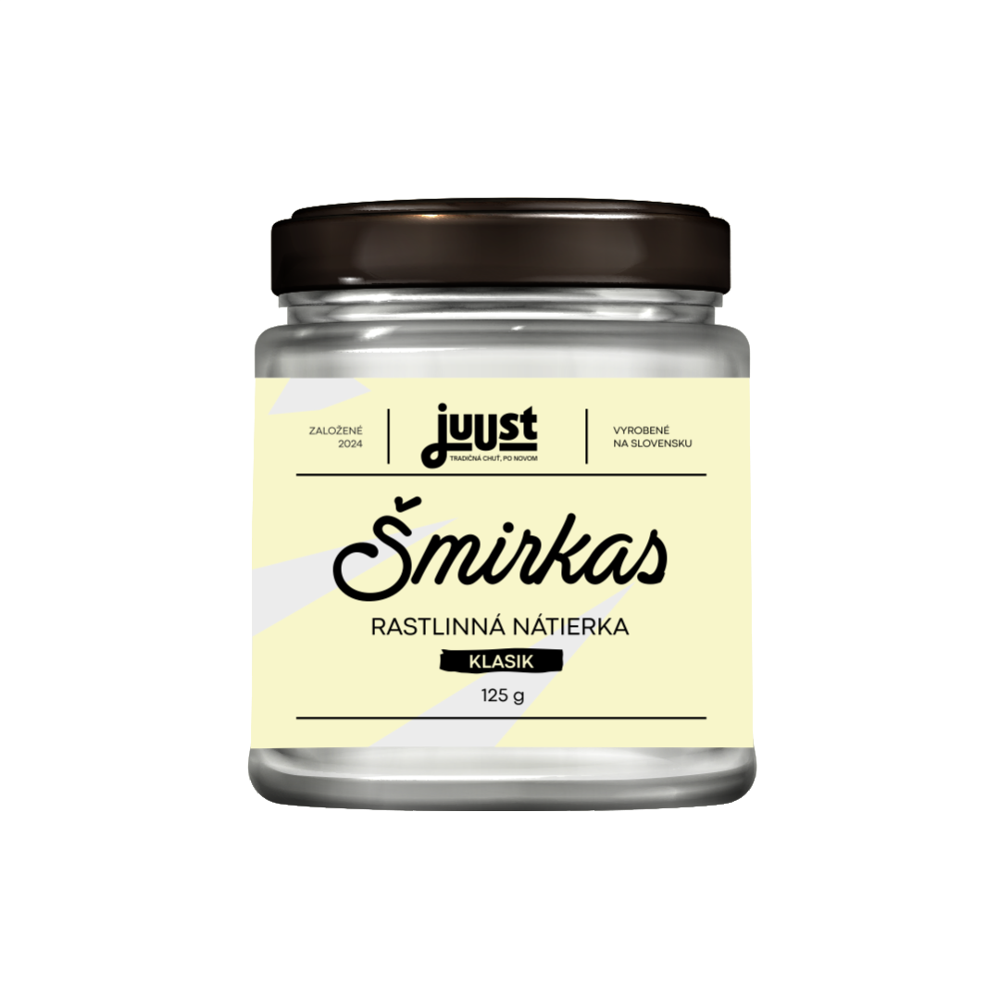
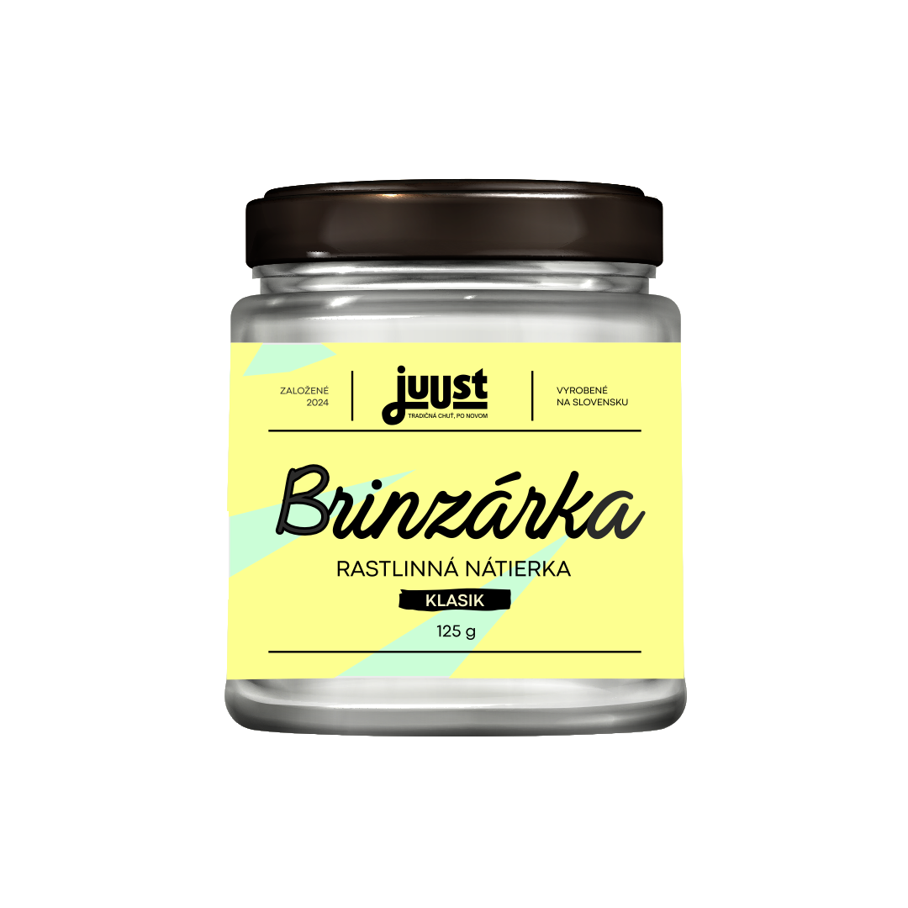
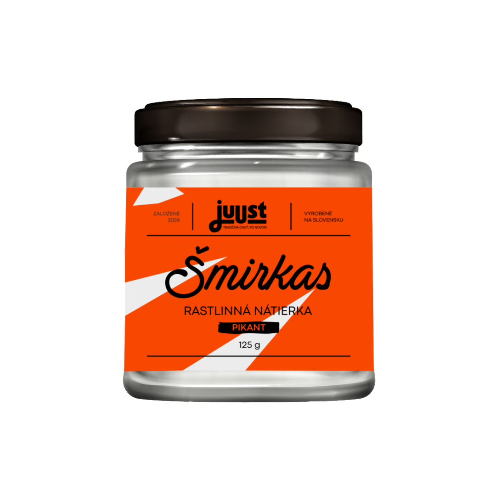
Ako ľudia, ktorí sa stravujú primárne rastlinne, sme chceli vytvoriť možnosť jesť dobré a kvalitné jedlo, ktoré naozaj chutí a zároveň telu prináša nutričnú hodnotu. Pre nás je ideálna budúcnosť taká, kde „rastlinné" neznamená „alternatívne", ale jednoducho výborné.
Väčšinu práce robíme priamo my – zakladatelia. Ručne, poctivo a s dôslednou kontrolou kvality. Držíme vysoké hygienické štandardy a pripravujeme sa na certifikáciu ISO 22000, aby sme bezpečnosť posunuli ešte vyššie. Každú jednu šaržu samostatne testujeme a áno, aj ochutnávame – lebo chuť sa nedá skontrolovať v exceli.
Sme Juust – lokálna výroba priamo v Šamoríne. Budujeme značku, ktorá stojí na troch pilieroch:
Bezmliečna a bezlepková alternatíva bryndze pre ľudí s intoleranciou na laktózu a kazeín, aj pre vegánov a vegetariánov. Výrazná bryndzová chuť a univerzálne použitie.
Tradičná papriková nátierka z bryndze, postavená na našej Brinzárke. Chuťovo plná a návyková. Podľa zákazníkov často chutí ešte lepšie než originál.
Rovnaký tradičný základ so štipkou štipľavej papriky pre tých, ktorí to majú radi ostrejšie. Výborný na chlieb, do wrapov aj ako dip.
Výrazná kombinácia rastlinnej bryndze a cvikly. Krásne ružová, jemne sladkastá. Deti ju milujú najmä kvôli farbe, dospelí kvôli výraznej chuti.
Juust sa stal výhradným distribútorom značky Revo Foods z Rakúska. Všetky ich produkty nájdete automaticky v našom portfóliu.
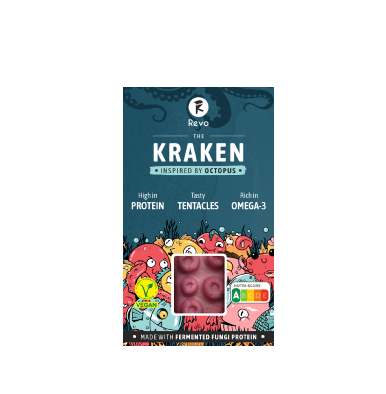
Jediná vegánska chobotnica na svete! Vyrobená z fermentovaného mykoproteínu, s vysokým obsahom bielkovín, bohatá na vlákninu a omega-3 mastné kyseliny. Realistická textúra a tvar vás ohromia!
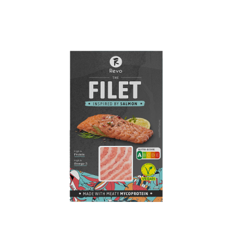
Autentický filet ako z lososa - šťavnatý, vyrobený z mykoproteínu, vďaka čomu si zachováva mäsitú štruktúru s prirodzene vláknitou textúrou. Spracovaný tak, aby si zachoval prirodzené živiny! Tento filet ponúka skvelú chuť, uspokojivý pocit v ústach a telu potrebné bielkoviny.
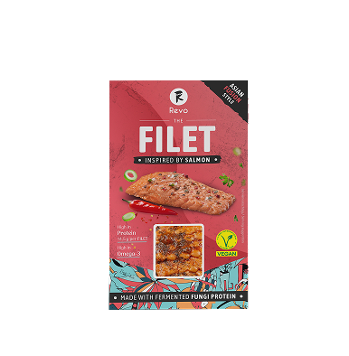
Výrazná marináda inšpirovaná ázijskou kuchyňou, ktorá podčiarkuje bohatú šťavnatosť filé. Silná umami chuť sa snúbi s vyváženou pikantnosťou, vďaka čomu je každé sústo vzrušujúce.
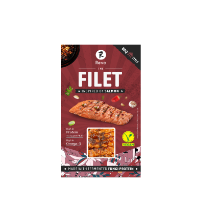
Autentická alternatíva lososového filetu v príchuti BBQ. Pochádza z úplne prvej línie produktov tejto značky a dodnes je to najpredávanejší kus!
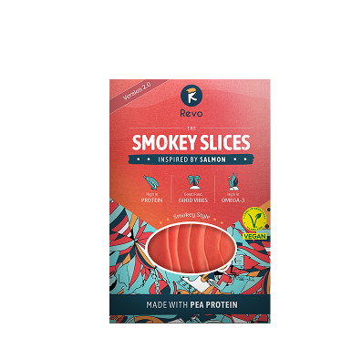
100 % rastlinné plátky s jemnou chuťou údeného lososa. Vyrobené z mikrorias, ktoré dodávajú čistú chuť inšpirovanú oceánom a cenné živiny. Jemné, chutné a univerzálne. Ideálne na brunch alebo sofistikované predjedlá.
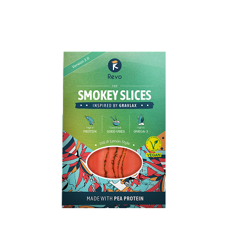
100 % rastlinné plátky lososa ochutené severskými bylinkami a citrónom. Čerstvé, jemné a vyvážené, s jemnou bylinkovo-citrónovou príchuťou, ktorá dopĺňa jemnú textúru.
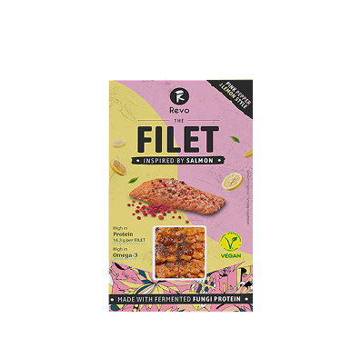
Filet s marinádou z ružového korenia a citróna. Svieža, aromatická a jemne výrazná marináda zvýrazňuje šťavnaté vrstvy filetu jasnými citrusovými tónmi a jemnou pikantnosťou korenia.
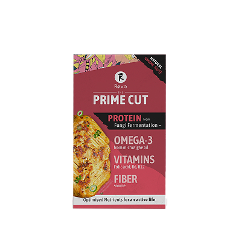
Proteín novej generácie navrhnutý tak, aby prekonal všetky očakávania. Vyrobený z hubového proteínu, má šťavnatú chuť a prirodzenú umami, ktorá sa hodí do každodenného varenia. Je univerzálny ako kuracie mäso alebo tofu, ale je vyrobený výlučne z húb. Je určený pre vyváženú výživu a aktívny životný štýl.
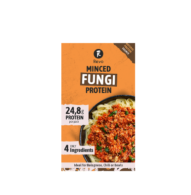
Mleté hubové nie je len náhradou mäsa - je to samostatný produkt s vysokým obsahom proteínu až 24,8 g na 160 g!
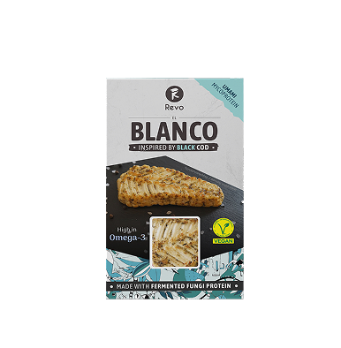
El Blanco Morský vlk vznikol minulý rok ako novinka spolu s produktmi Mleté hubové či alternatíva chobotnice. Odvtedy sa stal spolu s lososovými filetmi najpredávanejšou položkou vďaka svojej neuveriteľnej štruktúre podobnej rybiemu mäsu.
V maloobchode aj v gastre. Pre viac informácií klikni na mapu a zisti v ktorých pobočkách nájdeš naše produkty.
Chceš mať Juust vo svojej prevádzke alebo predajni? Napíš nám!